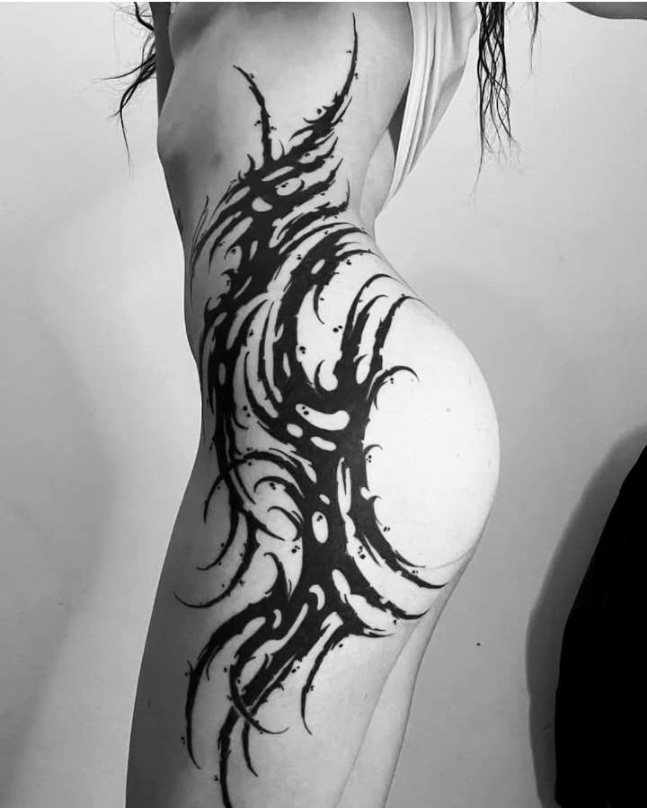
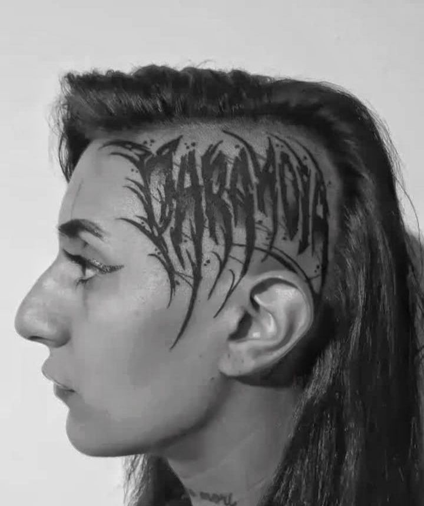
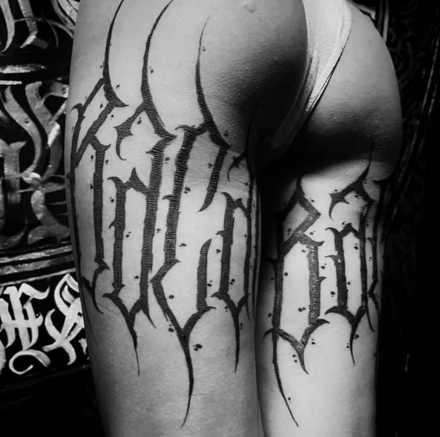

Flashes Disponibles


Dibujante y tatuador formado en la vieja escuela, aprendiendo a través de la disciplina y la tradición.
Hoy mi búsqueda se funde entre lo orgánico y lo tecnológico: Blackwork, biomecánica ciber-orgánica y horror.



[ PROTOTYPE_v01.sh ]

Indumentaria experimental - Próximamente en La Terminal.